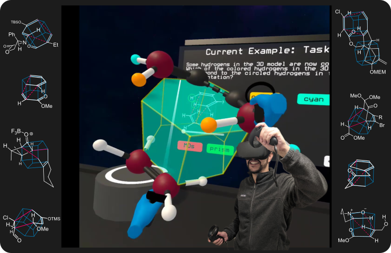
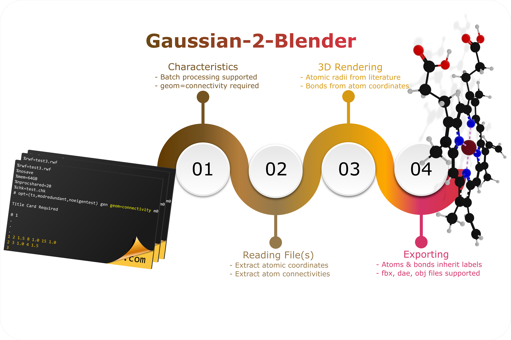

Featured Projects
To support students' abilities to extract, represent, and predict 3D-spatial properties of visually demanding chemical reactions, I created a Virtual Reality Learning Environment grounded in pedagogical frameworks, where students could visuallize and manipulate molecular animations coming from computational chemistry calculations.

VRxn
Designed, developed, tested, and implemented a Virtual Reality Learning Environment supporting students' abilities to extract, represent, and predict stereochemical outcomes for cycloaddition reactions.
- Game Engine: Unity 2020.3.5f1
- Target Platform: Oculus/Meta Quest & Quest 2
- Interaction Framework: XR Interaction Toolkit
- Source code: Click here

Gaussian-2-Blender
Built a 'Standalone' Blender-Python API app to convert computational chemistry calculations into 3D objects to import in modeling software such as Blender & Maya.
- Language: Python
- Interface: tkinter
- Input: Gaussian/16 '.com' and '.gjf' connectivity files
- Output: 3D objects in '.dae', '.x3d', '.fbx', '.obj', and '.stl', for 3D modeling and 3D printing
- Source code: Click here